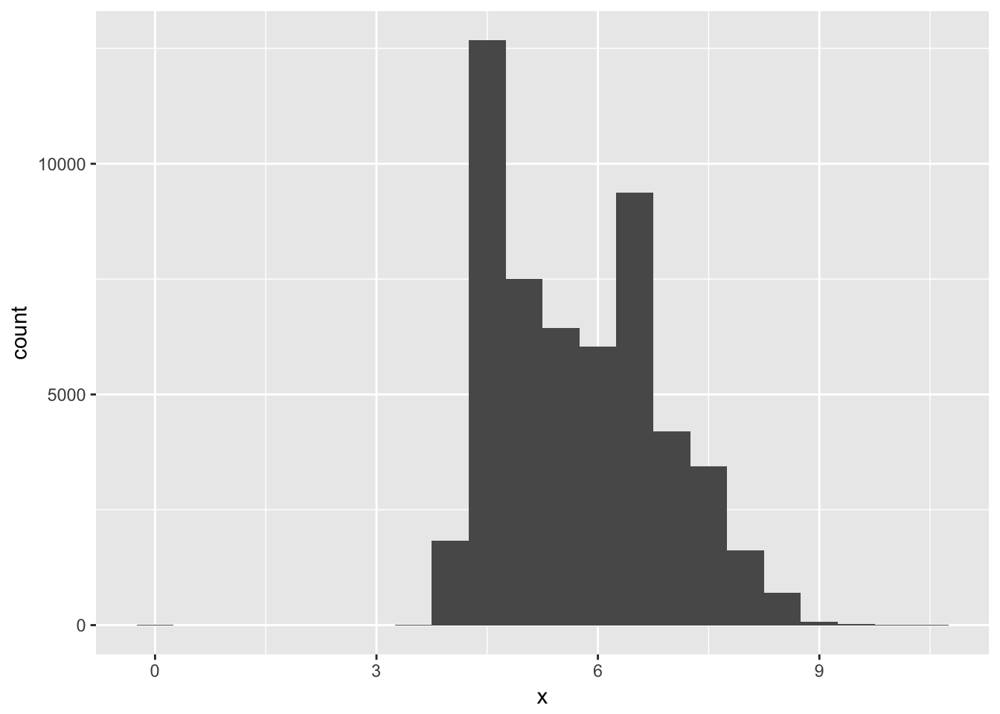
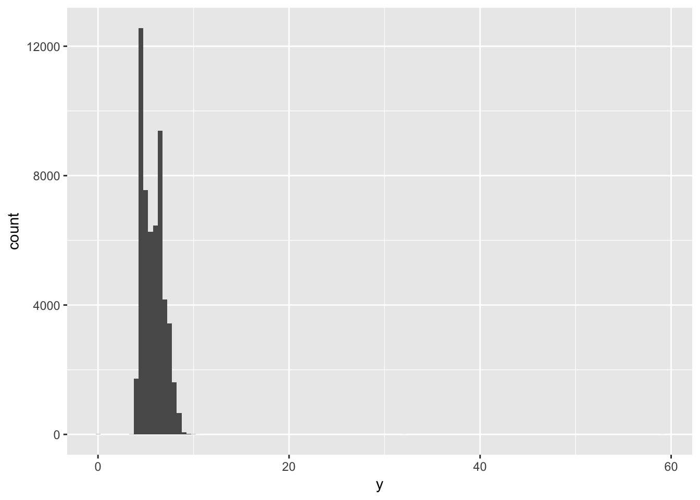
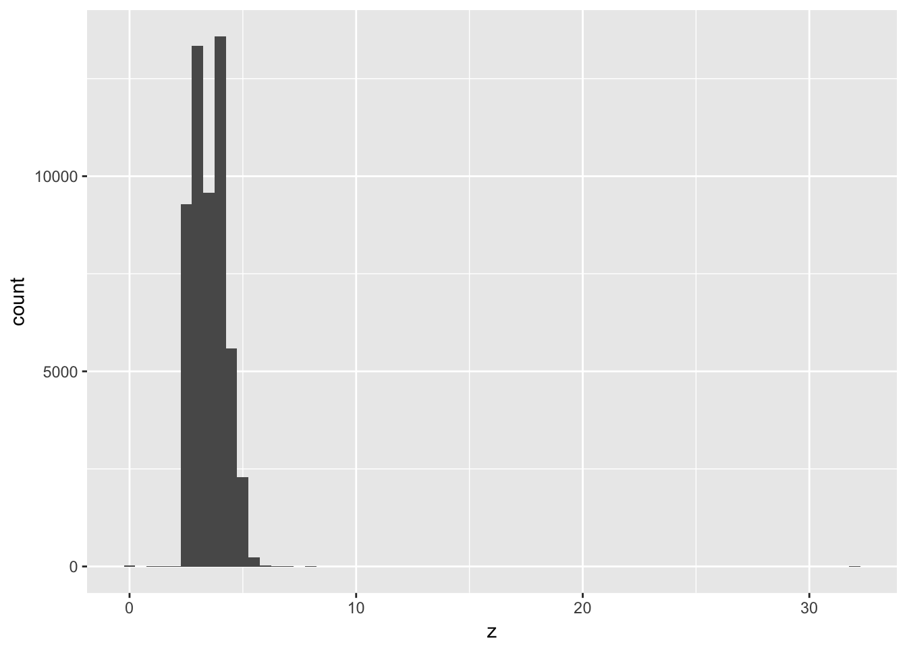
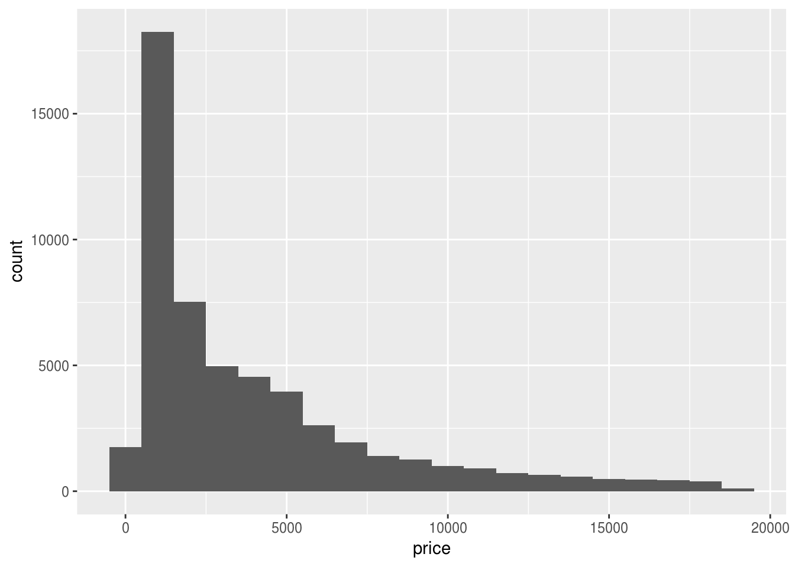
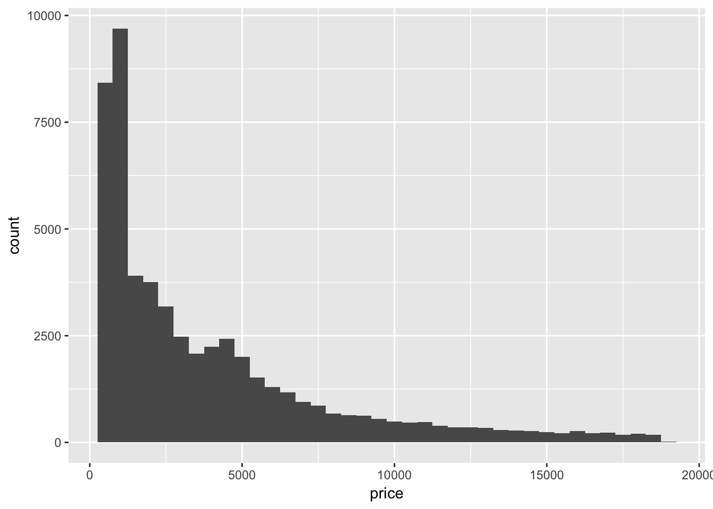
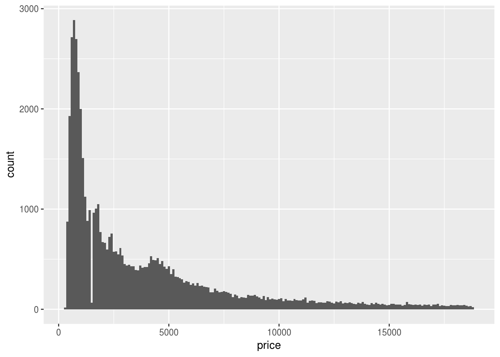
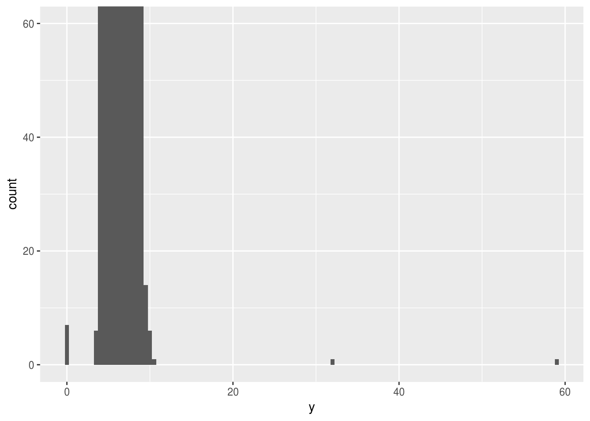
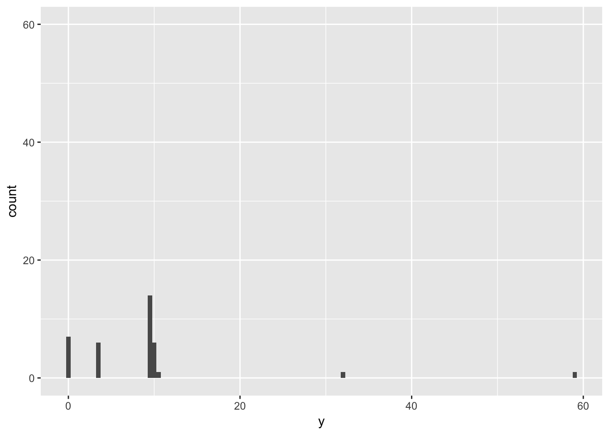
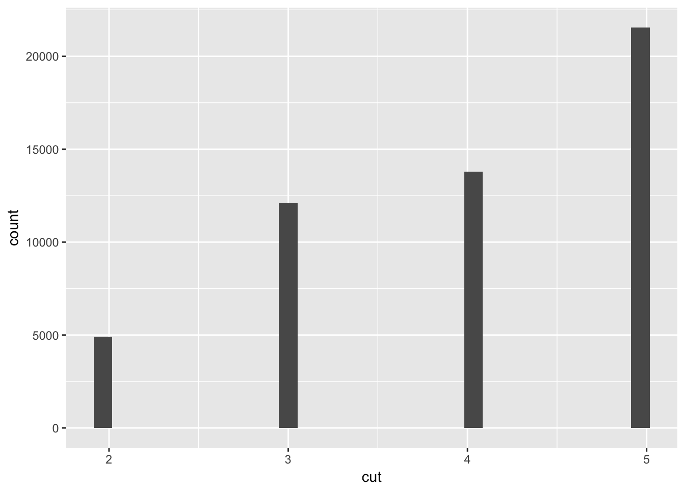
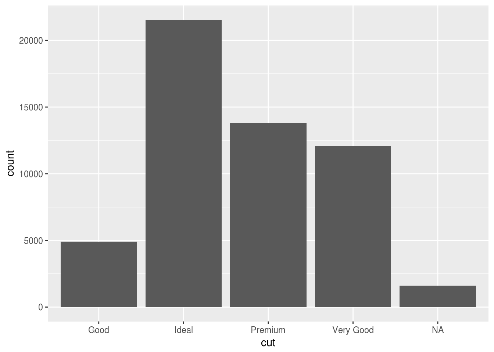

Chapter 7 - Exploratory Data Analysis
Load the libraries needed for these exercises.
library(tidyverse)7.3 - Variation
Problem 1
Explore the distribution of each of the x, y, and z variables in diamonds. What do you learn? Think about a diamond and how you might decide which dimension is the length, width, and depth.
The distribution of x, y, and z generally seems to fall between 0 and 10mm, although the distributions of y and z both have much longer tails.
ggplot(data = diamonds) +
geom_histogram(mapping = aes(x = x), binwidth = 0.5)
ggplot(data = diamonds) +
geom_histogram(mapping = aes(x = y), binwidth = 0.5)
ggplot(data = diamonds) +
geom_histogram(mapping = aes(x = z), binwidth = 0.5)
Problem 2
Explore the distribution of price. Do you discover anything unusual or surprising? (Hint: Carefully think about the binwidth and make sure you try a wide range of values.)
The price of diamonds appears to peak around $2000, followed by a long tail for the much more expensive diamonds. Narrowing the value of binwidth shows that some values are not very populated.
ggplot(data = diamonds) +
geom_histogram(mapping = aes(x = price), binwidth = 1000)
ggplot(data = diamonds) +
geom_histogram(mapping = aes(x = price), binwidth = 500)
ggplot(data = diamonds) +
geom_histogram(mapping = aes(x = price), binwidth = 100)
Problem 3
How many diamonds are 0.99 carat? How many are 1 carat? What do you think is the cause of the difference?
People may prefer to buy a diamond that is a full carat rather than almost a carat large. There appears to be significant rounding in the data set:
diamonds %>%
filter(between(carat, 0.99, 1.00)) %>%
group_by(carat) %>%
count()## # A tibble: 2 x 2
## # Groups: carat [2]
## carat n
## <dbl> <int>
## 1 0.990 23
## 2 1.00 1558Problem 4
Compare and contrast coord_cartesian() vs xlim() or ylim() when zooming in on a histogram. What happens if you leave binwidth unset? What happens if you try and zoom so only half a bar shows?
Compare and contrast the following three graphs: while coord_cartesian() will preserve data, ylim() will drop rows that fall outside of the limits.
ggplot(diamonds) +
geom_histogram(mapping = aes(x = y), binwidth = 0.5)ggplot(diamonds) +
geom_histogram(mapping = aes(x = y), binwidth = 0.5) +
coord_cartesian(ylim = c(0,60))
ggplot(diamonds) +
geom_histogram(mapping = aes(x = y), binwidth = 0.5) +
ylim(0,60)## Warning: Removed 11 rows containing missing values (geom_bar).
7.4 - Missing Values
Problem 1
What happens to missing values in a histogram? What happens to missing values in a bar chart? Why is there a difference?
Missing values are plotted in a bar chart but not a histogram. Remember that histograms are generally used to display numeric data, while bar charts are used for categorical data. Missing values can be considered another category to plot in a bar chart, but there is not necessarily an intuitive way to place missing values in a histogram.
diamonds %>%
mutate(cut = ifelse(cut == 'Fair', NA, cut)) %>%
ggplot(aes(x=cut)) +
geom_histogram()## `stat_bin()` using `bins = 30`. Pick better value with `binwidth`.## Warning: Removed 1610 rows containing non-finite values (stat_bin).
diamonds %>%
mutate(cut = as.character(cut)) %>%
mutate(cut = ifelse(cut == 'Fair', NA, cut)) %>%
ggplot(aes(x=cut)) +
geom_bar()
Problem 2
What does na.rm = TRUE do in mean() and sum()?
Setting na.rm = TRUE will remove missing values before executing the function.
x <- c(1, 2, 3, NA)
mean(x)## [1] NAmean(x, na.rm = TRUE)## [1] 2